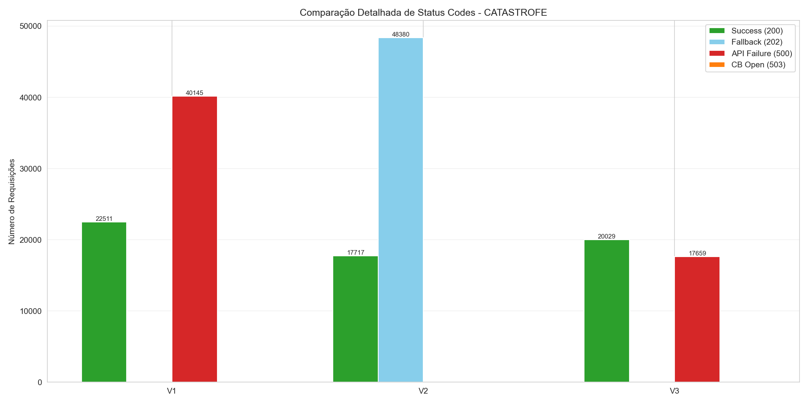
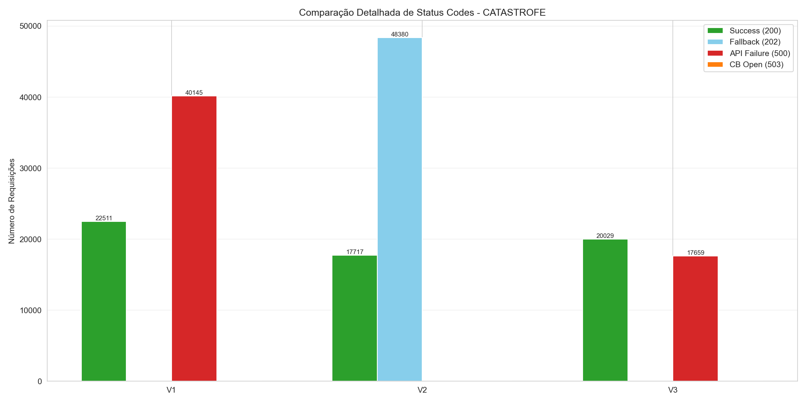

🎯 Análise Detalhada: CATASTROFE
📌 Contexto do Cenário: Falha Catastrófica
Situação: API externa completamente indisponível por 5 minutos (100% de falhas).
Objetivo do CB: Detectar a indisponibilidade e evitar sobrecarga, retornando respostas rápidas.
Métrica chave: Taxa de sucesso e redução de falhas reais (500).
💎 BENEFÍCIOS DO CIRCUIT BREAKER
- Redução de Falhas (500): 100.00%
- Melhoria no tempo médio: 26.94%
- Melhoria no P95: 8.06%
- Melhoria no P99: 1.12%
- Requisições protegidas: 0
- Tempo total economizado: 0.00s
🕒 Disponibilidade x Downtime
| Versão | Disponibilidade Efetiva (200 + 202) | Fallback (%) | Downtime Total (min) | Downtime de Falha Real (min) |
|---|---|---|---|---|
| V1 | 35.9% | 0.0% | 8.35 | 8.35 |
| V2 | 100.0% | 73.2% | 0.00 | 0.00 |
📊 Tempos de Resposta
| Version | Avg Response (ms) | P50 (ms) | P95 (ms) | P99 (ms) | Max (ms) | Fast Requests (%) | Slow Requests (%) |
|---|---|---|---|---|---|---|---|
| V1 | 243.014617 | 8.602083 | 2462.953366 | 2899.057485 | 3181.048043 | 90.864402 | 9.135598 |
| V2 | 177.555423 | 3.829167 | 2264.380601 | 2866.722354 | 3105.713668 | 93.338578 | 6.661422 |
| V3 | 1069.113704 | 1245.480743 | 2646.813168 | 2939.850333 | 3056.449626 | 39.436956 | 17.204415 |
🔍 Distribuição de Status
| Version | Total Requests | Success (200) | Fallback (202) | API Failure (500) | CB Open (503) | Success Rate (%) | Fallback Rate (%) | Total Success Rate (%) | API Failure Rate (%) | CB Protection Rate (%) |
|---|---|---|---|---|---|---|---|---|---|---|
| V1 | 62656.0 | 22511.0 | 0.0 | 40145.0 | 0.0 | 35.927924 | 0.000000 | 35.927924 | 64.072076 | 0.0 |
| V2 | 66097.0 | 17717.0 | 48380.0 | 0.0 | 0.0 | 26.804545 | 73.195455 | 100.000000 | 0.000000 | 0.0 |
| V3 | 37688.0 | 20029.0 | 0.0 | 17659.0 | 0.0 | 53.144237 | 0.000000 | 53.144237 | 46.855763 | 0.0 |
📊 Interpretação dos Status Codes
- 200/201: Sucesso direto da API externa
- 202 (Fallback): Circuit Breaker retornou resposta alternativa (considerado sucesso)
- 500: Falha real da API externa (erro propagado)
- 503: Circuit Breaker ABERTO - proteção ativa (evita timeouts de 3s)
Taxa de Sucesso Total = Success (200) + Fallback (202)
📈 Gráficos Comparativos

 
